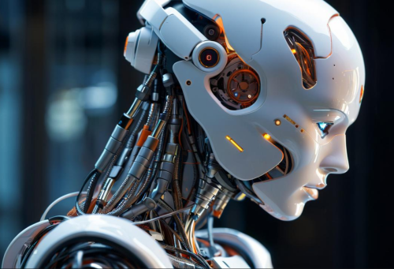
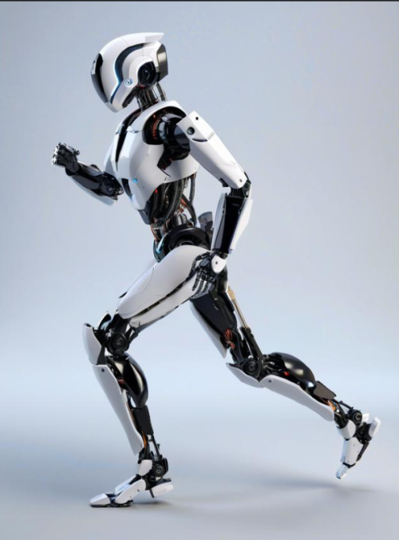

随着科技的快速发展，人形机器人已不再局限于科幻小说中的想象，而是逐步走入现实，并成为2024年科技领域的焦点之一。作为“四大赛道”之一的人形机器人，正在以其独特的魅力开启一个全新的行业发展纪元。
聚焦行业发展
近年来，随着人工智能、大数据、云计算等前沿技术的深度融合，人形机器人的研究与应用取得了显著进展。据《2024人形机器人研究报告》显示，全球范围内的人形机器人市场正以每年超过30%的速度增长。在中国，政府对于高科技产业的支持力度不断加大，特别是对人形机器人产业的扶持政策，极大地促进了该领域的发展。工信部在去年11月份发布的《人形机器人创新发展指导意见》。该《指导意见》明确指出了人形机器人专用传感器技术突破的重要性，强调需要攻克高精度视听力嗅等传感关键技术，以提升机器人的环境综合感知能力。这不仅是人形机器人技术发展的关键所在，也是推动其产业化的重要基础。

各产业积极链接人形机器人
制造业 - 汽车制造企业与机器人公司的合作日益紧密。特斯拉的创始人埃隆·马斯克让人形机器人走到大众面前，成功研发出能够协助完成生产线复杂任务的人形机器人。这些机器人不仅提高了生产效率，还降低了人工成本，展现了人形机器人在工业自动化领域的巨大潜力。
服务业 - 在服务行业，人形机器人的应用同样引人注目。中国移动推出的“HomiBot”家庭机器人服务系统，集成了陪伴聊天、娱乐互动、安全监控、家务助理等多种功能，满足了现代家庭对智能家居服务的需求。此外，“HomiBot”还在教育辅导方面有所尝试，为孩子提供个性化的学习辅助。
医疗健康 - 医疗健康领域也是人形机器人的一大应用场景。通过集成高级感知技术与自然语言处理能力，某些人形机器人已经可以在医院内担任导诊员的角色，帮助患者快速找到目的地；同时，它们还能进行初步的健康咨询，减轻医护人员的工作负担。

挑战与机遇
根据公开资料统计，2024年上半年，中国境内的人形机器人相关企业共获得了超过10亿美元的风险投资。其中，专注于家庭服务型人形机器人的初创公司A轮融资额达到了2亿美金，创下该领域单笔融资记录。此外，多家致力于工业级人形机器人研发的企业也相继完成了数千万美元级别的融资。
随着技术的不断进步和市场需求的增长，人形机器人的发展前景令人期待。无论是工业生产、日常生活还是医疗服务，人形机器人都有望发挥更加重要的作用。面对这一充满无限可能的新赛道，投资者和创业者们正摩拳擦掌，准备迎接这场科技革命带来的挑战与机遇。人形机器人，正以其独有的方式开启着一个崭新的行业纪元。